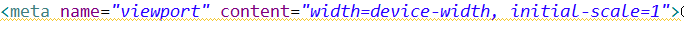

트위터에서 개발한 UI 툴킷으로 적은 코딩으로도 유려하고 풍부한 결과를 얻을 수 있는 강력한 라이브러리 입니다.
특히 반응형 웹이라는 트랜드를 반응해서 한번의 개발으로 PC와 모바일 모두에 대응할 수 있어 개발시간을 단축할 수 있고
유지보수의 이점이 있습니다.
또한 최고 수준의 UI 디자이너들이 디자인한 기본 디자인을 사용하면 디자이너가 아니라도 일정 수준 이상의 결과물을 얻을 수 있습니다.
디자이너 없이 서비스를 개발하는 단독 개발자
프로그래머나 퍼블리셔 없이 UI를 만들어야 하는 디자이너
HTML
CSS - 옵션, 디자인을 커스터마이징 하기 위해서 필요
JavaScript - 옵션, 툴킷에 새로운 기능을 추가하기 위해서 필요
12열 반응형 격자
다양한 화면 구성요소
자바스크립트 플러그인
타이포그래피
양식 입력요소 심지어 맞춤형 부트스트랩을 만드는 웹기반 주문까지.
이러면 끝이다! 추가한 두 파일을 가지고 부트스트랩을 사용하여 사이트나 어플리케이션을 개발할 수 있다.
http://maczniak.github.io/bootstrap/index.html 이곳에서 부트스트랩을 다운을 합니다
이 메타태그로 반응형 웹을 만들수 있다 만약 이 태그를 안쓴다면 반응형 웹을 만들수없다